원래 평가 함수·임계값·위치 허용을 유지했습니다. 표는 임계값 10, GT 키프레임별 macro 평균이며 공식 unique-CC 벤치마크 점수가 아닙니다.
모든 설정·수치 JSON · 607초 후보·점수 추적 · 새 training GT 비교 · 새 testing GT 비교| 분할 | 방법 | Recall | Precision | F1 |
|---|---|---|---|---|
| training | 변경 전 selected_A | 96.42% | 74.24% | 83.28% |
| training | 변경 전 result_B | 96.42% | 74.24% | 83.28% |
| training | 변경 후 selected_A | 99.51% | 94.17% | 96.77% |
| training | 변경 후 result_B | 99.51% | 94.17% | 96.77% |
| testing | 변경 전 selected_A | 100.00% | 99.83% | 99.91% |
| testing | 변경 전 result_B | 100.00% | 99.83% | 99.91% |
| testing | 변경 후 selected_A | 99.99% | 99.83% | 99.91% |
| testing | 변경 후 result_B | 99.99% | 99.83% | 99.91% |
합성 횟수는 복원 품질 점수가 아닙니다. 새 B가 원본으로 돌아간 경우 A/B 값이 같습니다. 실제 가림 관측만 남긴 별도 스트레스 테스트는 여기에서 보며, 일반 전체 영상 점수와 구분합니다.
가림이 가장 큰 실제 원본을 고정한 별도 앵커 테스트 · 합성 영상: 충분한 관측이 있을 때의 복원 성공과 정보 부재 실패
이번 실제 영상에서 새 B는 합성을 승인하지 않았습니다. 따라서 실제 가림 복원 성공 사례가 생겼다고 보고하지 않습니다. 실제 가림 테스트의 빨간 영역은 두 시점 이상에서 드러난 관측이 없는 영역입니다.
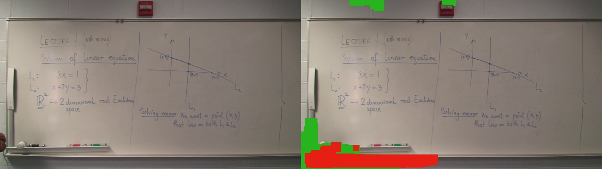
GT 607.674초: A F1 62.6427% → B F1 62.6192%. 아래 교수자 잔상 사례는 수정 전 B이며 새 B의 성공 사례가 아닙니다.
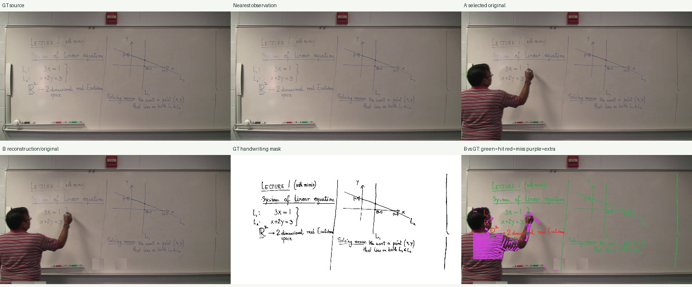
training 347.781초 F1은 97.2519% → 97.2064%로 0.0455%p 하락했습니다. testing의 세부 증감도 summary.json에 모두 남겼습니다.
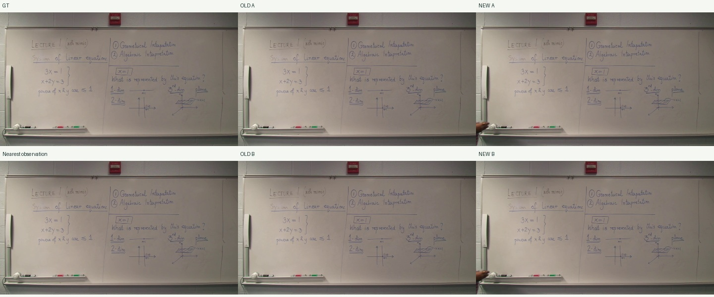
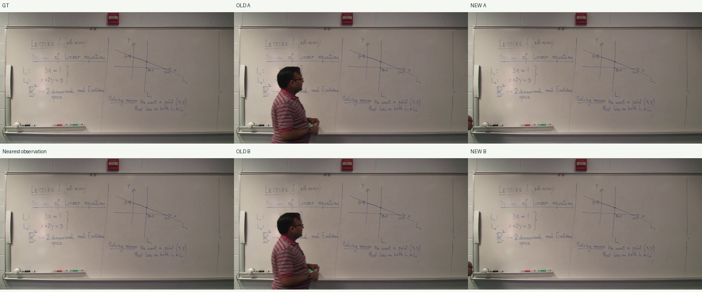
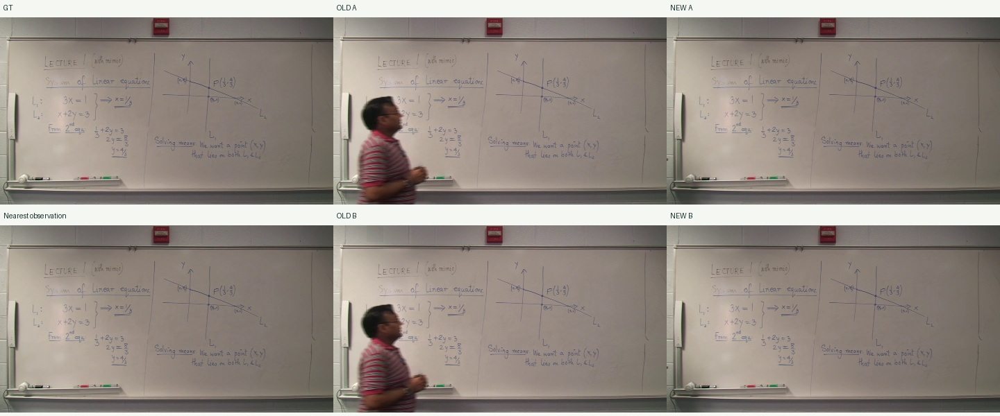
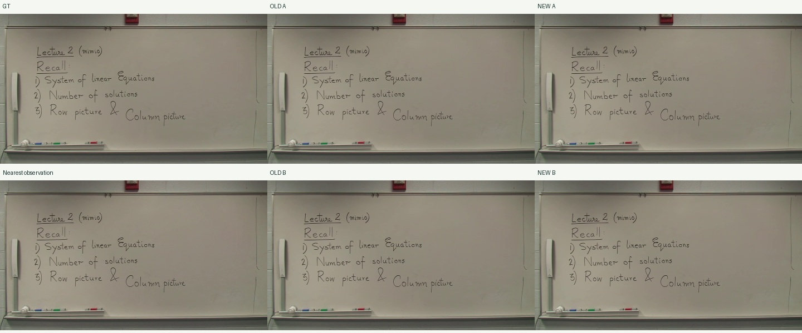
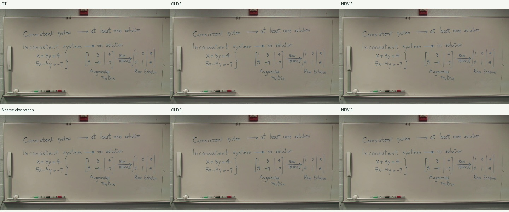
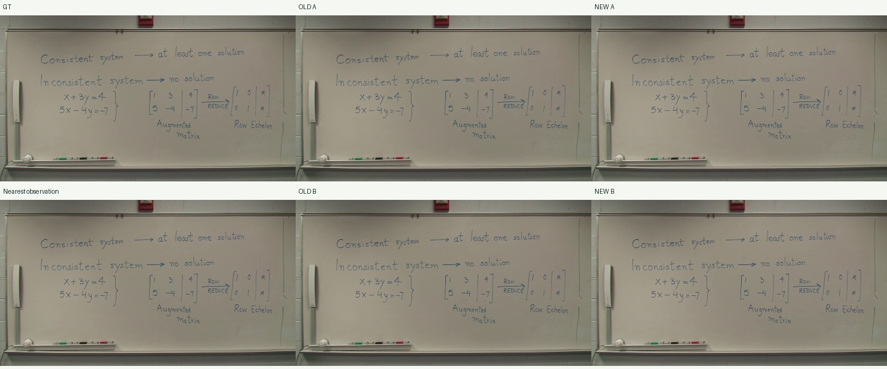
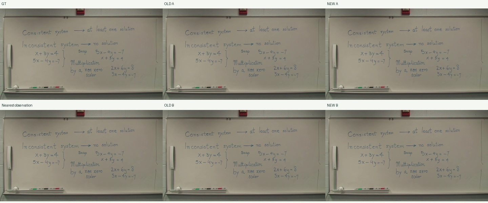
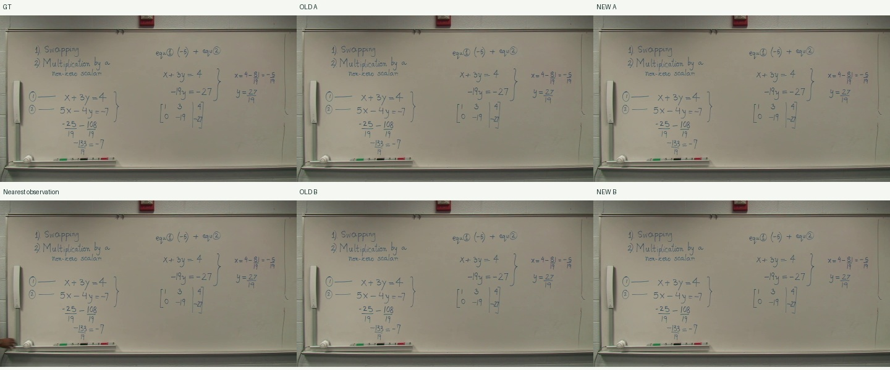
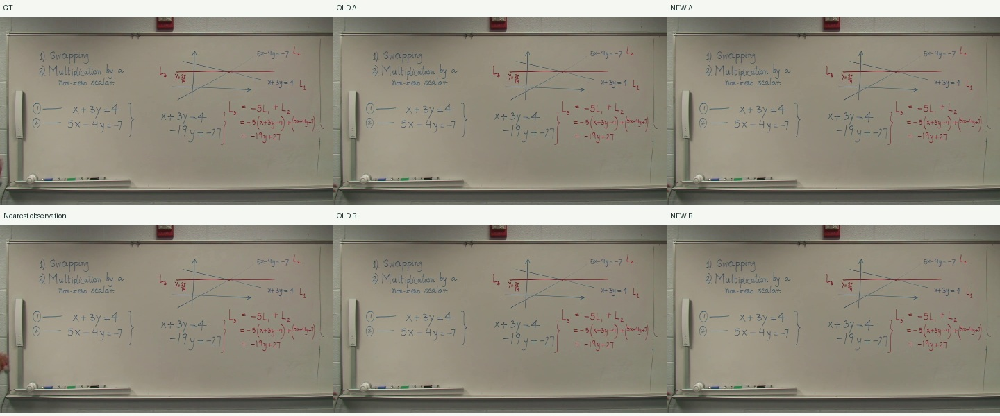
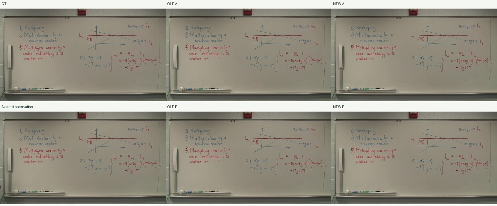
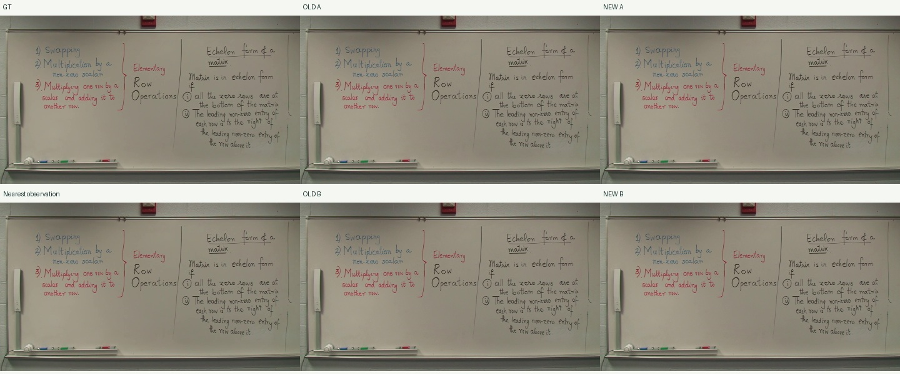
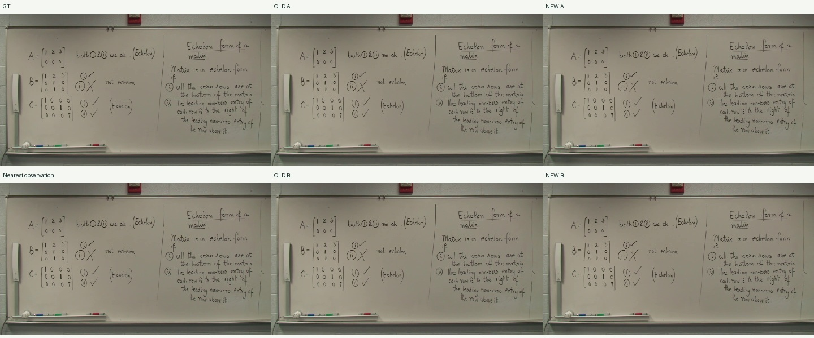
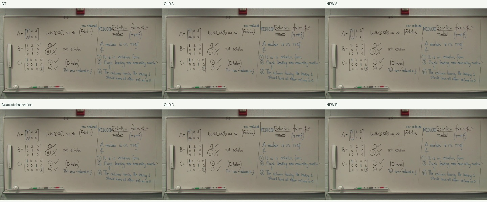